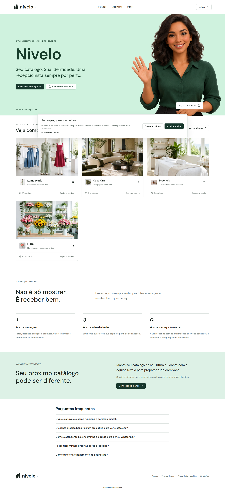
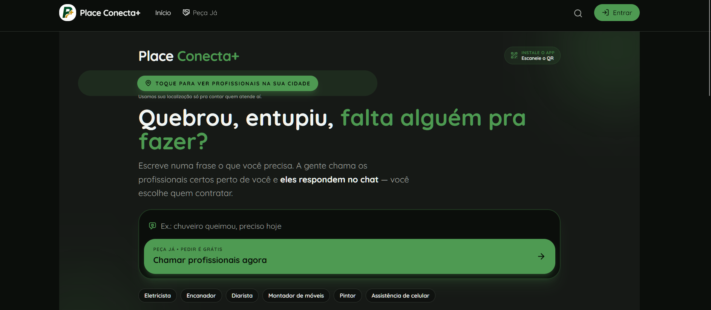
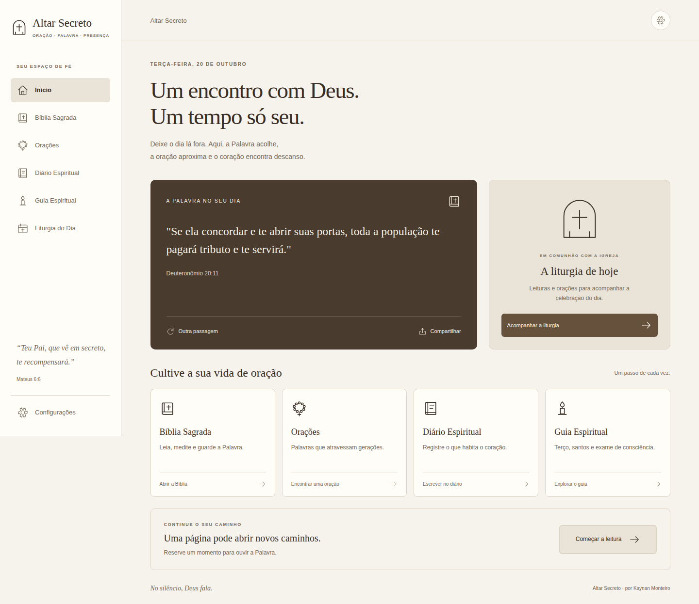
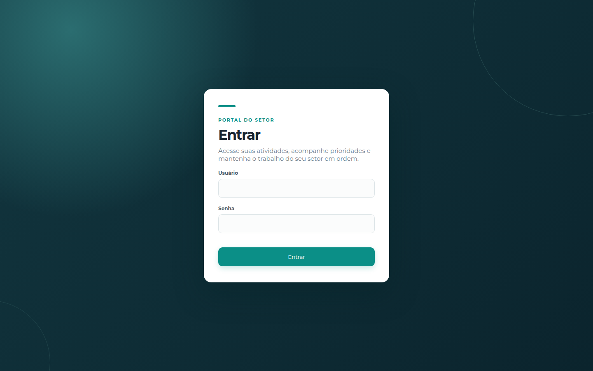
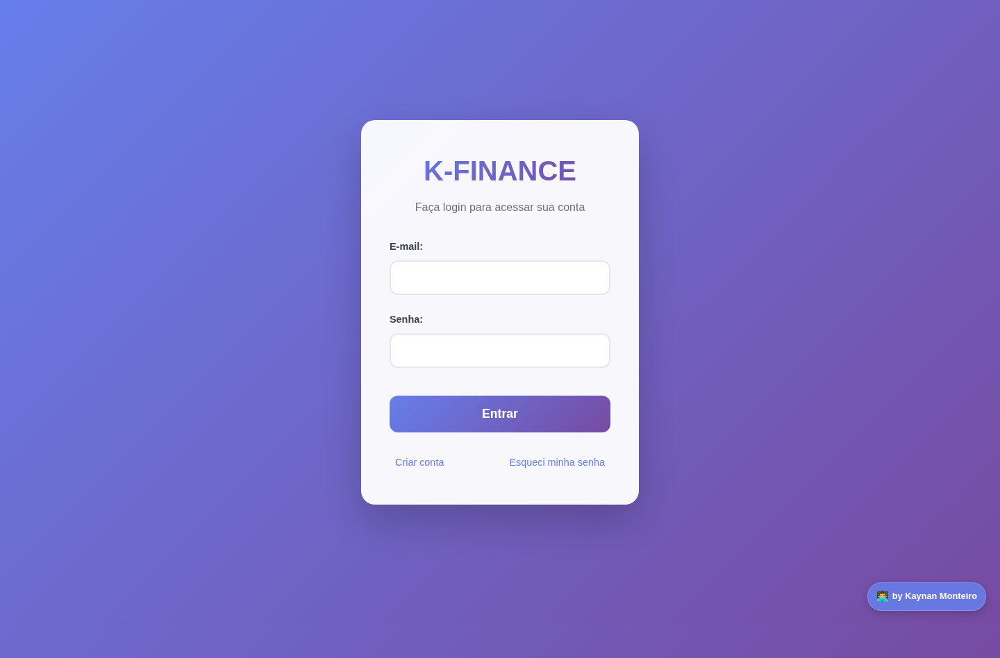
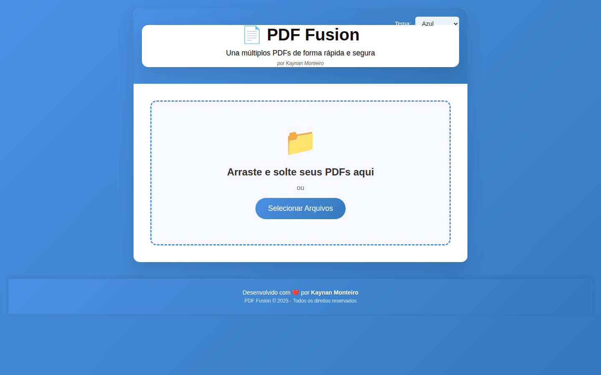
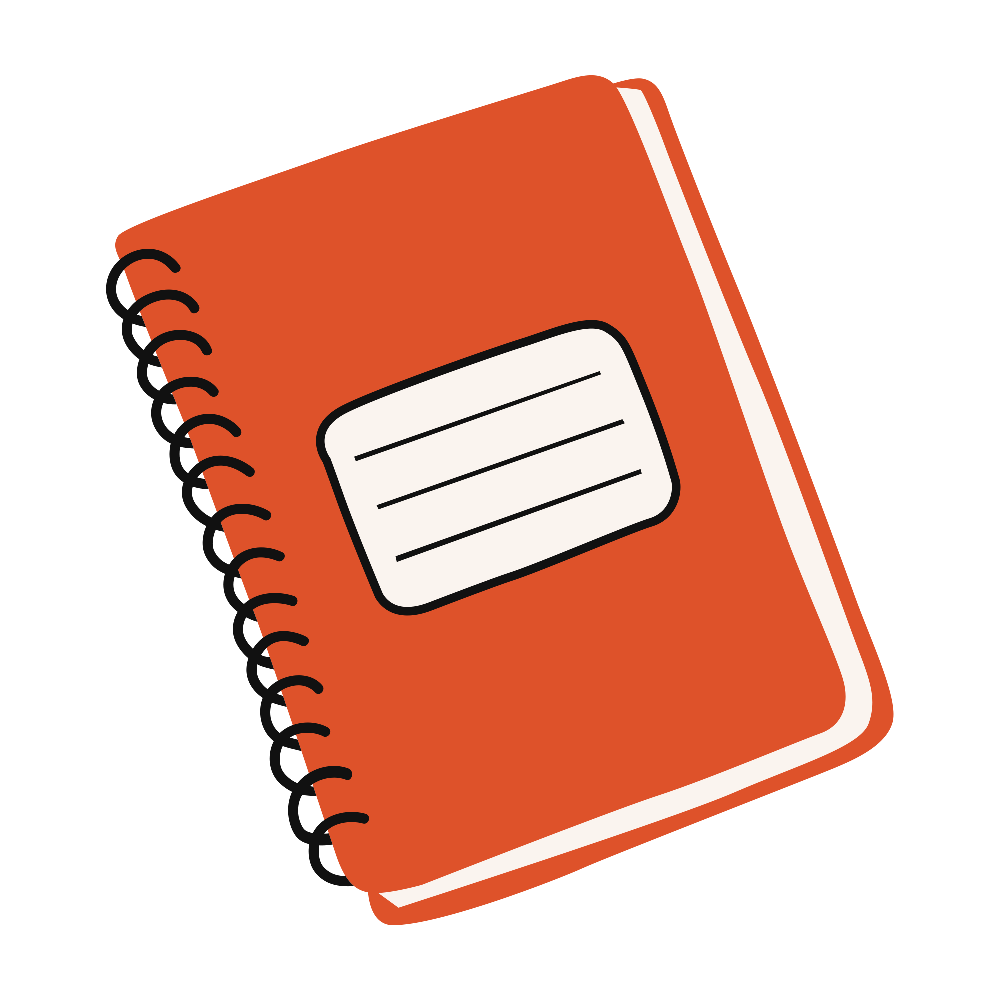
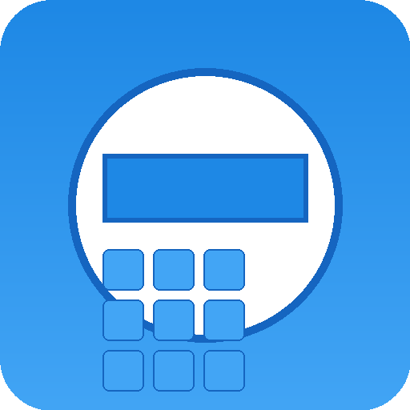
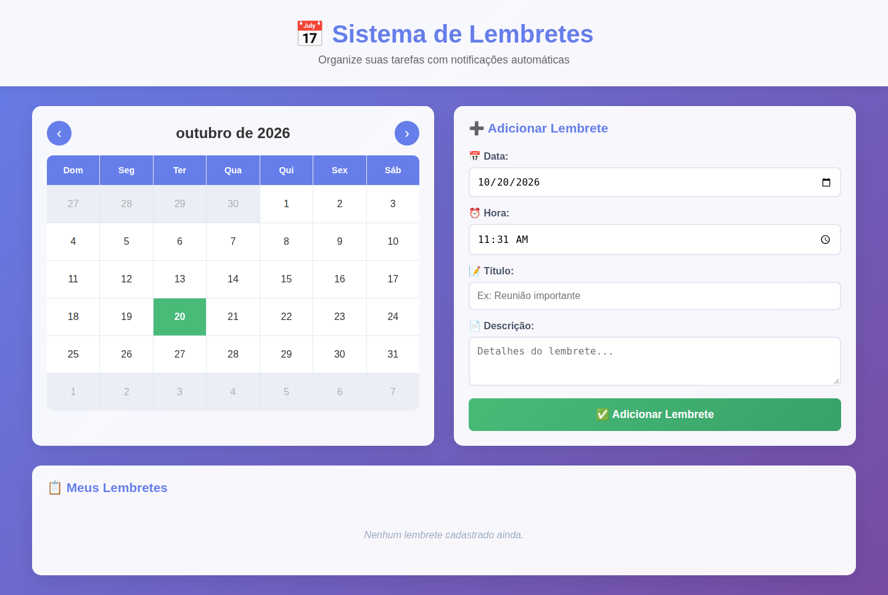

PRODUTO PRÓPRIO ↗01 · PRODUTO PRÓPRIO
Nivelo
Catálogos digitais com a identidade de cada negócio e atendente virtual 24h — uma solução própria para transformar descoberta em conversa e venda.
Next.jsReactTypeScript
Conhecer o Nivelo ↗ANALISTA DE DADOS · BUILDER · CRIADOR
Do processo manual ao produto digital: crio ferramentas que organizam a operação, revelam dados e tornam o trabalho mais simples.
01 / SOBRE O TRABALHO
Tecnologia boa é aquela que reduz atrito e ajuda alguém a decidir melhor.
Sou Kaynan Monteiro, estudante de Análise e Desenvolvimento de Sistemas e analista de TI. Trabalho na interseção entre dados, automação e desenvolvimento web, criando soluções práticas para rotinas que antes dependiam de planilhas, mensagens e tarefas repetitivas.
Também crio e opero produtos próprios, como o Nivelo, o Place Conecta+ e o Altar Secreto. Isso me dá uma visão completa: da ideia e posicionamento à interface, publicação, evolução e contato com quem usa.
02 / TRABALHOS SELECIONADOS
Uma seleção do que venho construindo: produtos que resolvem uma tarefa específica, experiências que podem ser usadas e sistemas pensados para crescer.

PRODUTO PRÓPRIO ↗Catálogos digitais com a identidade de cada negócio e atendente virtual 24h — uma solução própria para transformar descoberta em conversa e venda.

PRODUTO PRÓPRIO ↗Marketplace próprio que conecta pessoas a profissionais locais. O usuário descreve o que precisa e recebe propostas de quem pode resolver.

PRODUTO PRÓPRIO ↗Um espaço íntimo de oração, Bíblia, diário e estudo espiritual com recursos offline e experiência pensada para uso recorrente.

DEMO ONLINE ↗Aplicação para organizar demandas, acompanhar prioridades, registrar tempo e gerar relatórios exportáveis.

DEMO ONLINE ↗Gestão financeira com dashboard, categorias, cartões, gráficos, relatórios e exportação para Excel.

DEMO ONLINE ↗Une arquivos PDF no navegador com drag and drop, reordenação, temas e processamento local.
03 / ECOSSISTEMA
Além dos destaques, mantenho uma coleção de projetos menores, experimentos e produtos independentes. Nivelo, Place Conecta+ e Altar Secreto são produtos que também são meus.

Caderno financeiro com planejamento, privacidade, backup e relatórios.
Abrir projeto ↗
35 calculadoras especializadas em seis categorias, com modelo freemium.
Ver no GitHub ↗Um espaço íntimo de oração, Bíblia, diário e estudo espiritual com recursos offline.
Conhecer o produto ↗
Uma ferramenta simples para organizar lembretes e não perder o essencial.
Abrir demo ↗Interface para apoiar o controle e a visualização de comissões.
Ver no GitHub ↗Aplicativo Windows para unir, ordenar e preparar documentos PDF.
Ver no GitHub ↗Automação e tratamento de relatórios para gerar informação mais útil.
Ver no GitHub ↗Exploração de uma experiência conversacional aplicada à organização financeira.
Ver no GitHub ↗Estrutura interna para apoiar fluxos, informação e organização de uma operação.
Ver no GitHub ↗Experimento de automação para acelerar tarefas repetitivas de texto.
Ver no GitHub ↗Projeto voltado a tornar os primeiros passos em programação mais acessíveis.
Ver no GitHub ↗A versão experimental do portfólio que reúne estudos de interface e apresentação.
Ver no GitHub ↗04 / COMO POSSO AJUDAR
Uma combinação de pensamento analítico, execução e cuidado com quem está do outro lado da tela.
Menos tarefas repetitivas, mais tempo para o que exige decisão. Python, JavaScript, Excel e integrações.
Organização, tratamento, relatórios e dashboards para transformar informação espalhada em visão de negócio.
Interfaces responsivas, PWAs e ferramentas digitais com foco em clareza, acessibilidade e uso real.
Validação rápida de ideias com entregas funcionais, documentação e espaço para evoluir.
05 / CONTEÚDO
01
Uma extensão do Chrome criada para acompanhar clientes e aumentar a agilidade da equipe de atendimento.
02
Como automação e uso avançado de planilhas podem reduzir esforço e melhorar processos de negócio.
03
Uma investigação que aproxima matemática, biologia, lógica, filosofia e fé em uma reflexão autoral.
Ler o artigo ↗EXPERIMENTO INTERATIVO
Uma pausa divertida: digite as palavras antes que elas atinjam sua base.
Digite as palavras que caem para atirar.
06 / VAMOS CONSTRUIR
Se você precisa organizar um processo, transformar dados em clareza ou tirar um produto do papel, vamos conversar.